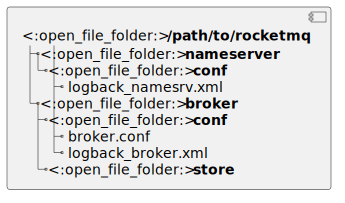

1. RocketMQ特性
-
广播消息
-
消息过滤
-
批量发送
-
顺序消息
-
延迟消息
-
事务消息
-
消息重试
-
消息回溯
-
高可用
-
消息准实时送达
-
Dashboard
2. 架构


2.3. 名词解释
-
Producer: 发送消息的角色.
-
Consumer: 消费消息的角色, 支持集群模式和广播模式两种消费方式.
-
Broker: Producer和Consumer交互, 负责收发消息, 存储消息.
-
NameServer: 是Broker的注册中心, Broker在启动时向所有的NameServer注册, 生产者Producer和消费者Consumer可以从NameServer中获取所有注册的Broker列表和Topic路由信息.

4. Topic路由管理

4.3. Broker注册流程
[NameServer] RouteInfoManager
-
加写锁.
-
将cluster-broker名称加入到
clusterAddrTable中. -
遍历Broker的地址信息集合, 如果地址一致但是BrokerId不一致则删除旧的信息, 保证同一个地址在map集合中只能有一条数据. 将brokerId-broker地址加入到
brokerAddrTable中. -
将Broker加入到brokerLiveTable中, 并记录收到注册请求的时间戳, 在进行心跳检测的时候需要根据这个时间戳来判断是否在规定时间内未收到Broker的请求.
-
如果是首次注册或者数据发生变更, 则将topic信息保存到
topicQueueTable中. -
如果发送请求的Broker不是Master, 需要获取其所属的Master地址设置到BrokerLiveInfo中并返回给Broker.
-
释放锁.
4.4. Topic路由信息管理
核心类为 org.apache.rocketmq.namesrv.routeinfo.RouteInfoManager , 接收到Broker注册然后维护cluster, broker, topic信息.
4.5. Topic路由删除
4.5.1. 删除触发时机
-
RouteInfoManager#scanNotActiveBroker: NameServer每10秒定时扫描brokerLiveTable, 如果最近一次的心跳包时间在120s之前, 则会剔除该Broker. -
BrokerController#unregisterBrokerAll: Broker关闭时会向NameServer发送unregisterBroker[104]指令下线自己.
4.5.2. Broker删除流程
-
从
brokerLiveTable中删除该Broker节点. -
从
brokerAddrTable中根据brokerId删除节点. -
如果删除后该brokerName下无其他节点:
-
将整个brokerName节点列表删除.
-
从
clusterAddrTable中删除该brokerName. 如果删除后该cluster下无其他brokerName, 则将该cluster删除. -
从
topicQueueTable中删除该broker下关联的所有topic路由.
-
4.6. Topic路由发现
查找入口: RouteInfoManager#pickupTopicRouteData :
. 从 topicQueueTable 中获取到各个Broker的Topic配置信息.
. 从 brokerAddrTable 中获取到各个Broker的节点信息.
. 如果NameServer支持顺序消息, 则从kv配置中获取该Topic的 ORDER_TOPIC_CONFIG 配置.
5. 消息发送
5.1. 发送示例代码
public class Producer {
public static final int MESSAGE_COUNT = 1000;
public static final String PRODUCER_GROUP = "please_rename_unique_group_name";
public static final String DEFAULT_NAMESRVADDR = "127.0.0.1:9876";
public static final String TOPIC = "TopicTest";
public static final String TAG = "TagA";
public static void main(String[] args) throws MQClientException, InterruptedException {
DefaultMQProducer producer = new DefaultMQProducer(PRODUCER_GROUP);
producer.setNamesrvAddr(DEFAULT_NAMESRVADDR);
producer.start();
for (int i = 0; i < MESSAGE_COUNT; i++) {
try {
/*
* Create a message instance, specifying topic, tag and message body.
*/
Message msg = new Message(TOPIC /* Topic */,
TAG /* Tag */,
("Hello RocketMQ " + i).getBytes(RemotingHelper.DEFAULT_CHARSET) /* Message body */
);
/*
* Call send message to deliver message to one of brokers.
*/
SendResult sendResult = producer.send(msg);
/*
* There are different ways to send message, if you don't care about the send result,you can use this way
* {@code
* producer.sendOneway(msg);
* }
*/
/*
* if you want to get the send result in a asynchronize way, you can use this send method
* {@code
*
* producer.send(msg, new SendCallback() {
* @Override
* public void onSuccess(SendResult sendResult) {
* // do something
* }
*
* @Override
* public void onException(Throwable e) {
* // do something
* }
*});
*
*}
*/
System.out.printf("%s%n", sendResult);
} catch (Exception e) {
throw new RuntimeException(e);
}
}
producer.shutdown();
}
}5.2. Producer启动流程
入口: DefaultMQProducerImpl#start
-
检查ProducerGroup名称是否包含特殊字符.
-
如果用户没有设置instanceName, 则设置为
PID#System.nanoTime(). -
创建
MQClientInstance, 用于和NameServer和Broker通信, 并put至全局的MQClientManager中, key为clientID(IP@InstanceName). -
启动
MQClientInstance:-
启动和NameServer通信的client.
-
启动定时任务: 每2分钟获取一次最新的NameServer地址.
-
启动
PullMessageService. -
启动
RebalanceService. -
启动
defaultMQProducer. -
向所有的Master Broker发送心跳包, 包含自己的clientID和producerGroupName.
-
5.3. 消息发送流程
入口: DefaultMQProducerImpl#sendDefaultImpl
-
如果发送批量消息, 则会将Collection编码成一条消息.
-
校验消息
-
校验Topic合法性.
-
校验body长度不能为空且不能超过4MB.
-
-
根据Topic查询路由信息:
-
从本地
topicPublishInfoTable查询. -
如果没有则从NameServer查询(
RequestCode.GET_ROUTEINFO_BY_TOPIC)并更新到本地topicPublishInfoTable中. -
如果还是没有则用默认topic
TBW102查询路由信息.
-
-
如果最终没有Topic路由信息则抛出异常
No route info of this topic. -
根据topic和brokerName选择一个MessageQueue(轮训), 如果MessageQueue为空则不会发送消息.
-
根据brokerName找到Master节点的ip地址.
-
如果消息体大于4KB则会做zlib压缩并打
0x1tag. -
如果属于事务消息则会打
0x100tag. -
如果存在Hook, 则会执行
sendMessageBefore方法. -
设置消息header.
-
发送消息.
-
如果是异步发送, 待接口返回后回调sendCallback.
-
如果消息发送失败, 则会重试(同步发送重试三次, 其他不会), 每次重试会规避上次发送失败的Broker. 如果开启
sendLatencyFaultEnable, 则根据latency会在一段时间内不会向该Broker发送消息.
6. 源码调试
-
下载源码:
git clone https://github.com/apache/rocketmq.git --branch 4.9.x --single-branch -
创建RocketMQ目录及配置:
 -
配置文件均从源码distribution目录拷贝, broker.conf加以下配置:
broker.confstorePathRootDir=/path/to/rocketmq/broker/store namesrvAddr=localhost:9876 autoCreateTopicEnable=false -
设置环境变量
ROCKETMQ_HOME=/path/to/rocketmq/nameserver. -
启动NameServer.
-
添加Broker启动参数
-c /path/to/rocketmq/broker/conf/broker.conf并启动. -
注释掉
org.apache.rocketmq.example.quickstart.Producerproducer.setNamesrvAddr(DEFAULT_NAMESRVADDR);这行代码并启动. -
注释掉
org.apache.rocketmq.example.quickstart.Consumerconsumer.setNamesrvAddr(DEFAULT_NAMESRVADDR);这行代码并启动.